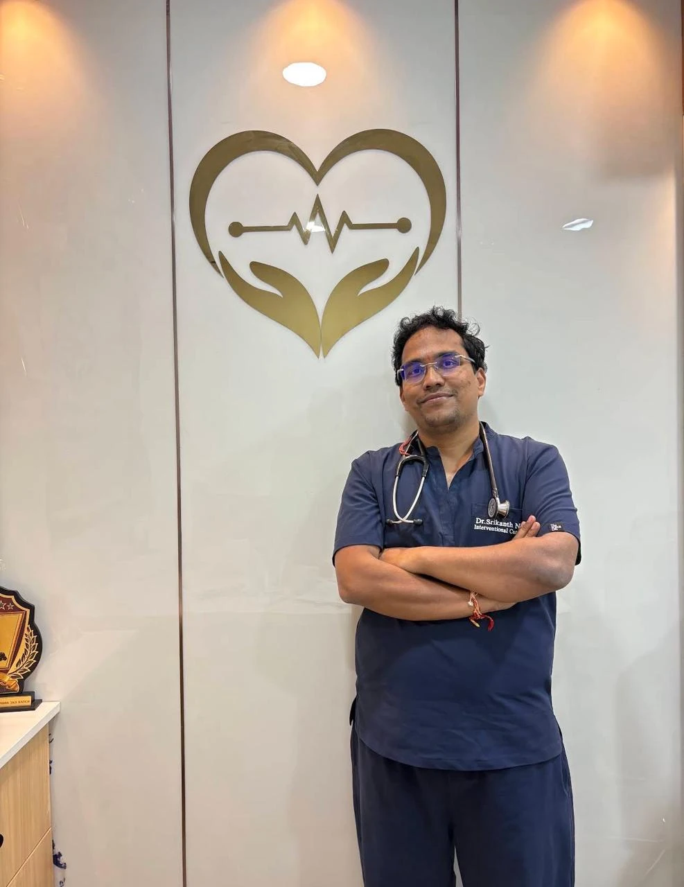
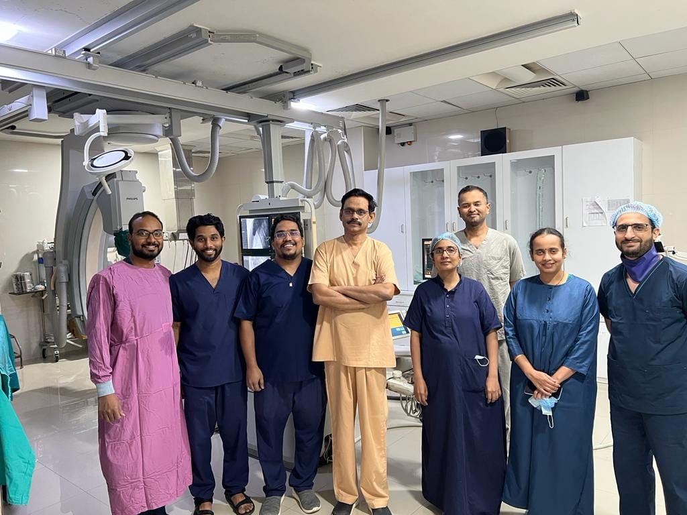
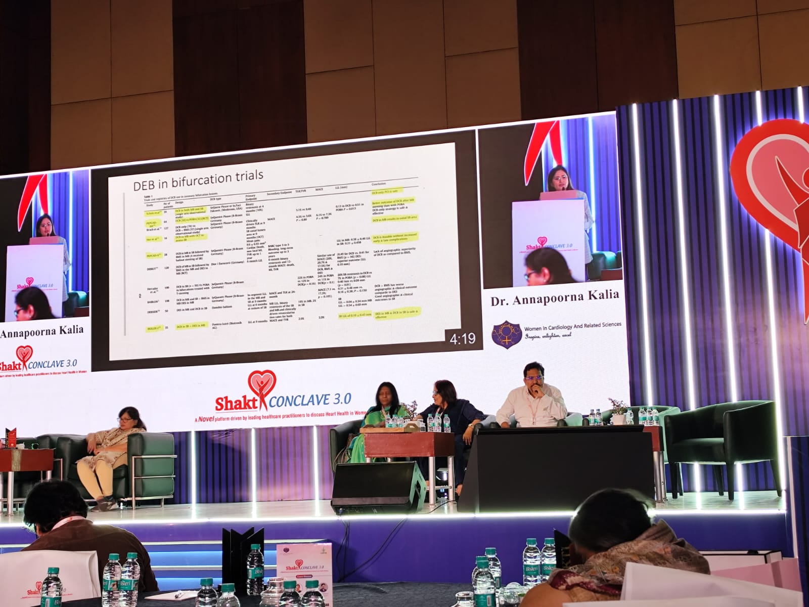
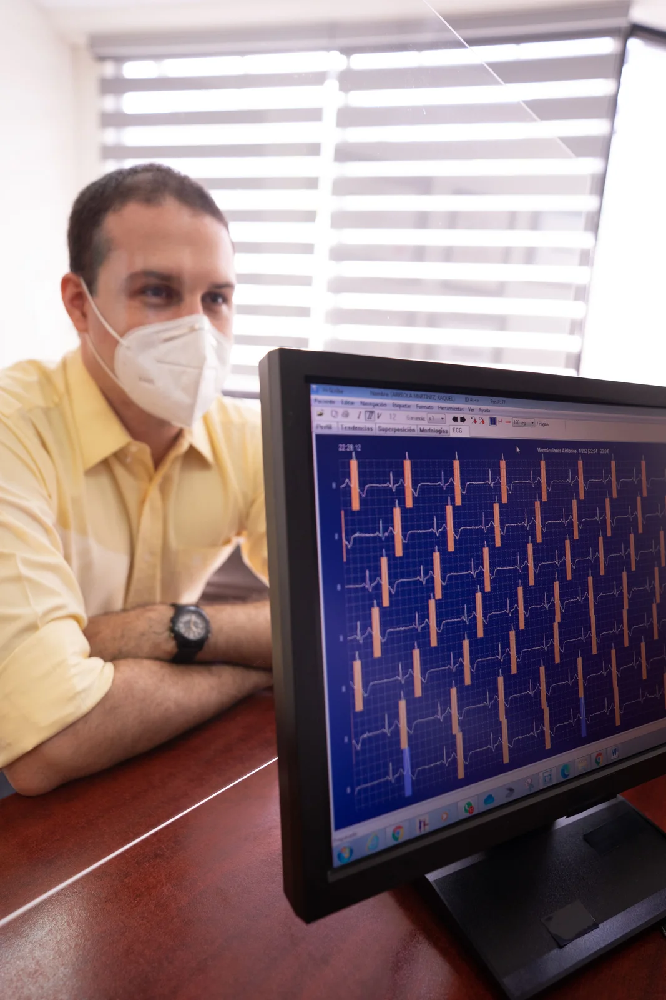
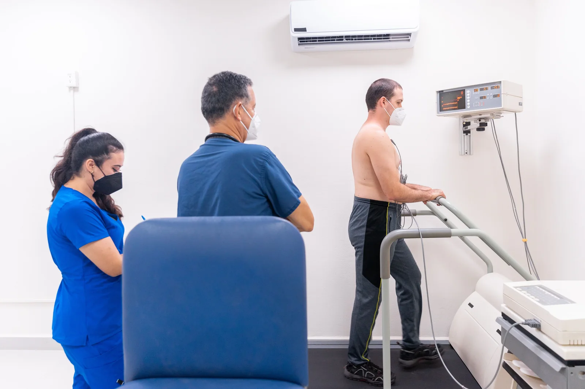
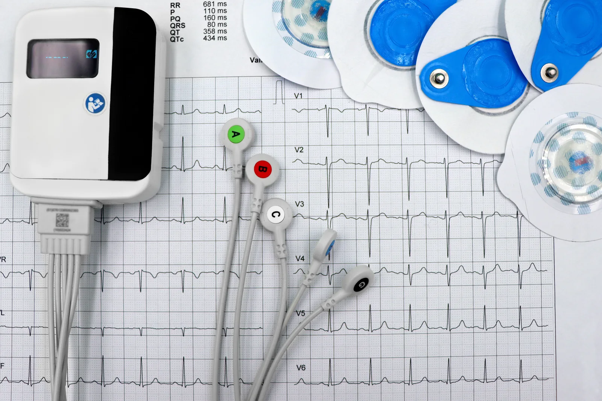

01
Cardiology Consultation
Care for chest pain, palpitations or breathlessness, plus preventive check-ups based on age, risk and family history.
Book a consultationWith Dr. Srikanth Nakka, Consultant Interventional Cardiologist
MBBS · DNB (General Medicine) · DM (Cardiology)
Clear, practical heart-health guidance can support informed choices and long-term wellbeing. Explore prevention, healthy habits and when to seek care.
Explore practical heart-health videos and updates, shared for community wellbeing.

Practical heart-health education belongs to everyone. Explore clear, patient-focused guidance designed to build understanding and support healthier conversations across our community.
Consultant Interventional Cardiologist at Sri Purna Cardiac Care
Dr. Nakka’s clinical focus includes coronary artery disease, high blood pressure, cholesterol management, arrhythmias, heart failure evaluation and preventive cardiology.
Consultations are available for heart-related concerns, risk assessment and preventive care. Clinic services include cardiology consultation, ECG, 2D echocardiography, TMT stress testing, Holter monitoring and blood pressure monitoring. Tests are recommended according to individual clinical needs.
Clinic: Shop 208, 2nd Floor, Raichandani Orion Mall, beside V 2 Fitness, Kompally, Hyderabad.
Consultation hours: Monday–Sunday, 6:00 PM–9:00 PM.
Read about Dr. Nakka’s qualifications and clinical experience.
View Dr. Nakka’s Full ProfileSri Purna Cardiac Care is a dedicated cardiology clinic located at Raichandani Orion Mall, Kompally, Hyderabad. We provide specialist cardiology consultations, diagnostic testing and preventive heart-care services under the care of Dr. Srikanth Nakka, Consultant Interventional Cardiologist.
Patients receive unhurried consultations, clear explanations of test results, and personalised treatment plans focused on long-term cardiovascular health.
Dr. Nakka completed MBBS at Osmania Medical College, DNB in General Medicine at DDU Hospital, New Delhi, and DM in Cardiology at NIMS, Hyderabad. His experience includes academic work at NIMS and consultant practice at Yashoda Hospital, Secunderabad, before joining Sri Purna Cardiac Care. These photos show real moments with colleagues, at conferences and in community health.








Comprehensive cardiology consultation and diagnostic services — ECG, 2D echocardiogram, TMT stress test, Holter monitoring, blood pressure monitoring and cardiac health check-ups.
Care for chest pain, palpitations or breathlessness, plus preventive check-ups based on age, risk and family history.
Book a consultation
Heart-rhythm test to detect irregular heartbeat and signs of heart disease. ECG testing available at our clinic.
Ask about ECGHeart ultrasound to assess heart valves, chambers and pumping function. 2D echo testing available.
Ask about echocardiography
Treadmill stress test to check for reduced blood flow to the heart under exertion. TMT testing available.
Ask about TMT
24–48 hour ambulatory heart-rhythm monitoring to detect intermittent arrhythmias.
Ask about Holter monitoringAccurate blood pressure measurement and hypertension monitoring support.
Ask about blood pressure monitoringCardiac-related blood tests including lipid profile and cardiac markers, as advised during evaluation.
Ask about blood investigationsRequest a cardiology consultation with Dr. Srikanth Nakka at Sri Purna Cardiac Care, Kompally, Hyderabad. New and returning patients welcome — evening OPD appointments available Monday to Sunday, 6:00 PM – 9:00 PM.
Sri Purna Cardiac Care is located at Raichandani Orion Mall, Kompally, Hyderabad. Book an appointment using the form below, or contact the clinic during consultation hours.